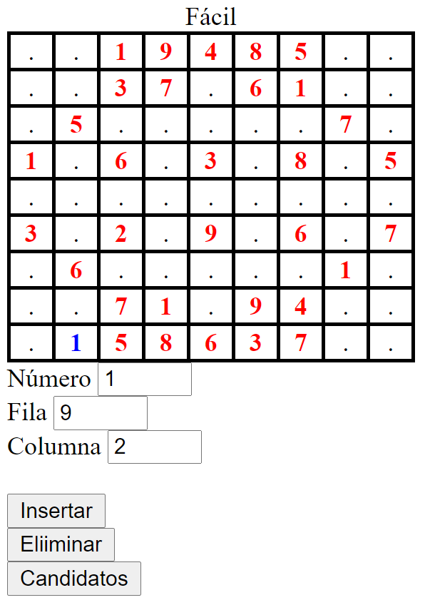
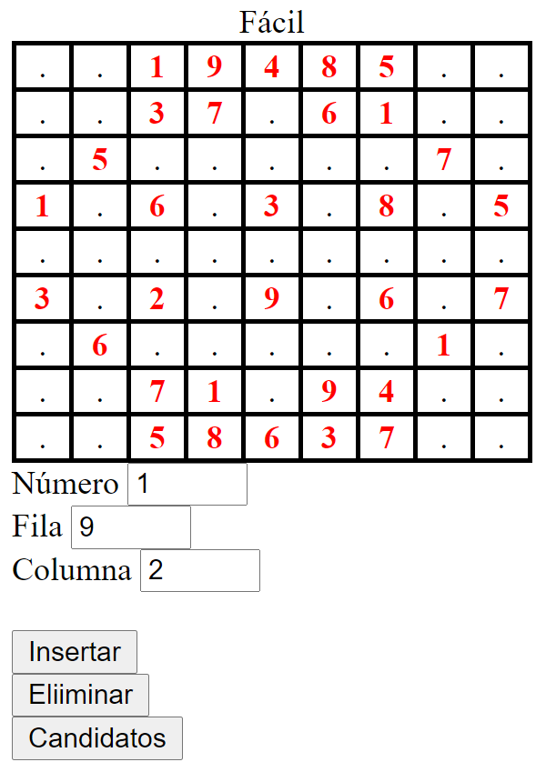
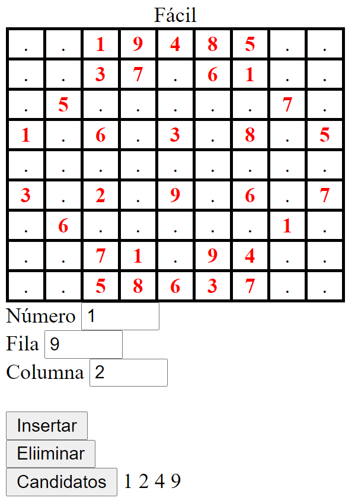

1.2.- Ejercicio 2: Operaciones iniciales
Realizar un script llamado index2.php partiendo del código de index1.php pero que envíe los datos a otro script añadiendo la siguiente funcionalidad:
Permitir al usuario introducir un número, fila y columna para realizar distintas operaciones.
El número a introducir debe estar comprendido entre 1 y 9. Las filas y columnas que introduzca el usuario también estarán comprendidas entre 1 y 9 aunque internamente el programa debe manejar índices de 0 a 8.
Permitir al usuario introducir un número en una celda, usando los controles de número, fila y columna y un botón. No puede introducirse un número en una celda que contenga un número inicial.
Permitir al usuario eliminar un número de una celda, usando los controles de fila y columna y un botón. No puede eliminarse un número de una celda que contenga un número inicial.
Mostrar al usuario los números candidatos a introducir en una celda, usando los controles de fila y columna y un botón. No pueden mostrarse candidatos de una celda que contenga un número inicial. Los candidatos a introducir en una celda son aquellos números que no están ni en la fila, ni en la columna ni en el cuadro de esa celda.
La pantalla debe ser similar a ésta:

Tras realizar la operación, deben mantenerse los números introducidos. A continuación se muestra el resultado de las tres operaciones
|  |  |  |
A tener en cuenta:
Para la realización de la funcionalidad requerida, deberán usarse dos tableros, el inicial y el actual del juego para poder discriminar entre celdas que contienen números iniciales y números introducidos durante el juego, que deben transmitirse vía POST.
Deben añadirse al fichero que contiene las funciones, las siguientes, con los argumentos que requieran:
- Mostrar tablero de juego. Debe mostrar el array tablero del juego discriminando por color entre números iniciales y añadidos.
- Insertar número. Insertará en el array del juego un número en la posición que el usuario haya elegido. Si es una celda inicial NO se insertará el número.
- Eliminar número. Eliminará del array del juego el número que está en la posición que el usuario haya elegido. Si es una celda inicial NO se eliminará el número el número.
- Comprobar si un número está en una fila. Dado un número y un índice a una fila, comprobará si dicho número aparece en la fila.
- Comprobar si un número está en una columna. Dado un número y un índice a una columna, comprobará si dicho número aparece en la columna.
- Calcular cuadro. Dada una fila y columna, debe devolver el cuadro al que pertenece. Los cuadros se numeran de la siguiente forma:
0 para las celdas 0,0 a 2,2
1 para las celdas 0,3 a 2,5
2 para las celdas 0,6 a 2,8
3 para las celdas 3,0 a 5,2
…
8 para las celdas 6,6 a 8,8
- Calcular fila inicial de un cuadro. Dado un índice a un cuadro, calcula la fila de su primera celda.
- Calcular fila final de un cuadro. Dado un índice a un cuadro, calcula la fila de su última celda.
- Calcular columna inicial de un cuadro. Dado un índice a un cuadro, calcula la columna de su primera celda.
- Calcular columna final de un cuadro. Dado un índice a un cuadro, calcula la fila de su última celda.
Debes conocer
Los controles para la introducción de números deben ser input de tipo number
Aunque existen fórmulas para calcular un cuadro dadas las coordenadas de una celda, se usarán estructuras de control de tipo if.
También existen fórmulas para calcular las filas y columnas iniciales y finales de un cuadro. En este caso debes usar para el desarrollo de dichas funcioness estructuras de control de tipo switch.